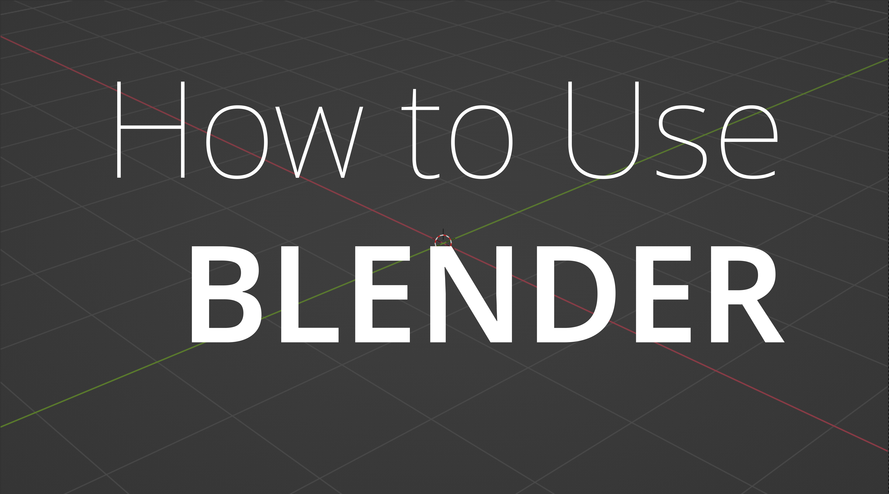
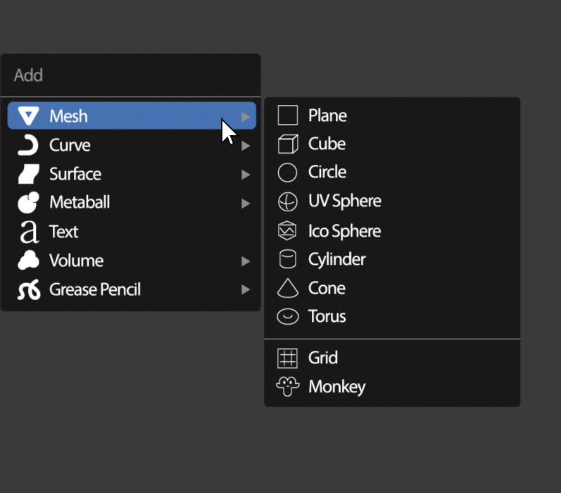
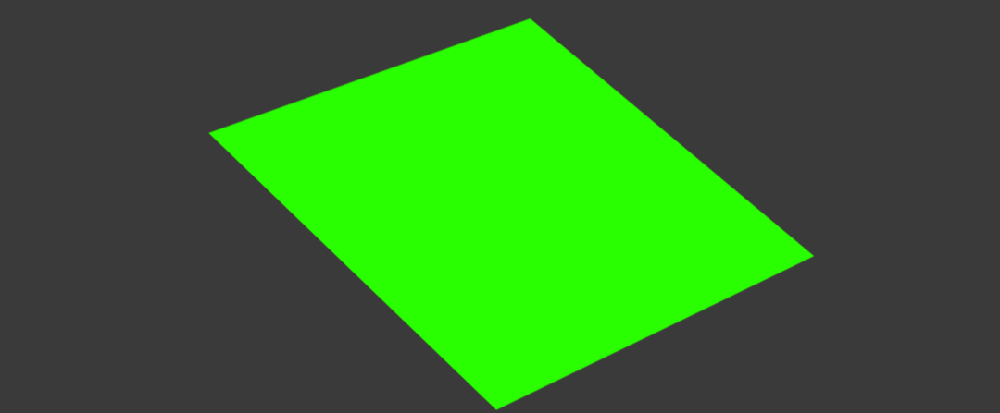
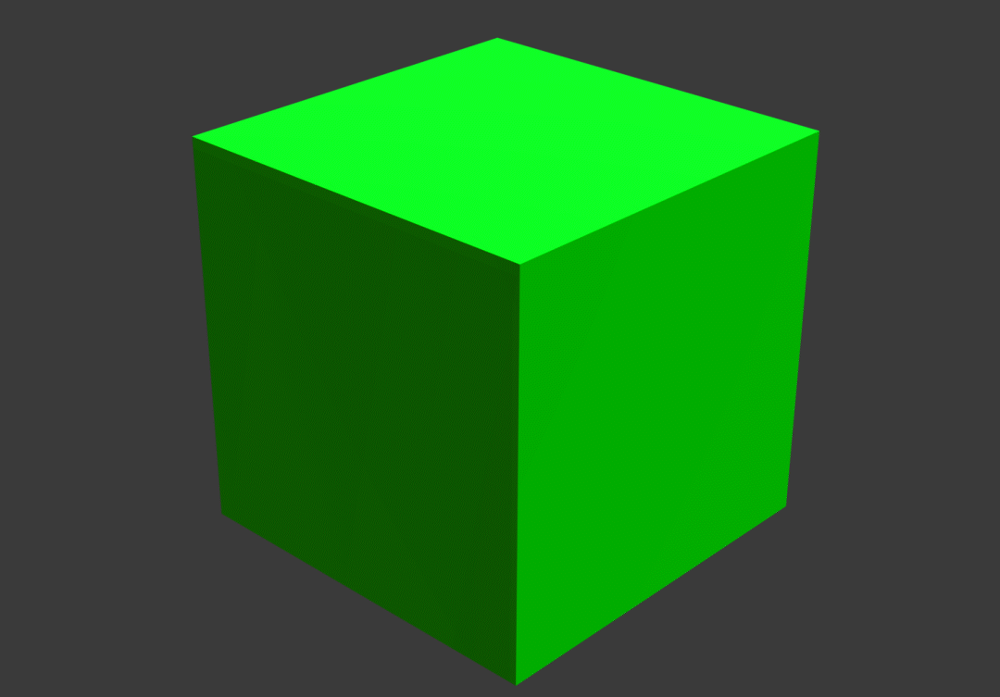
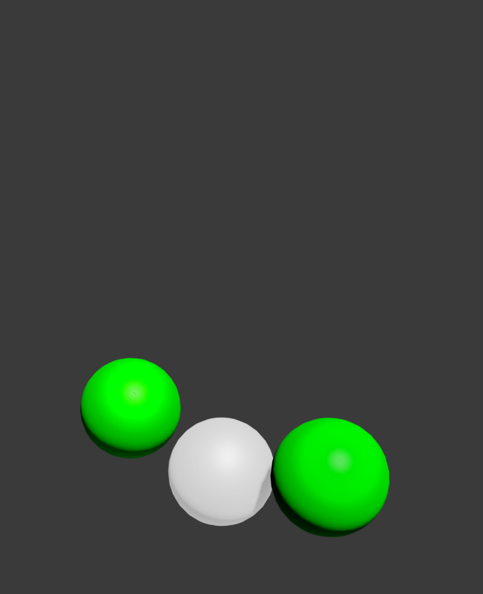
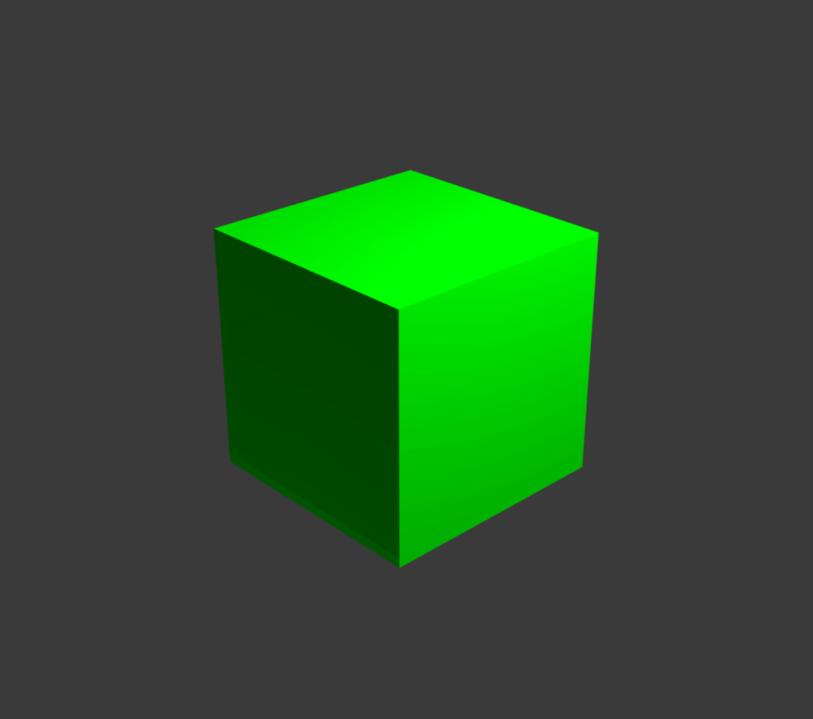

-기초 모델링편-
1. 오브젝트를 만들어보자
만들고 싶은 모델링의 형태를 생각하여
맞는 기본 오브젝트를 골라 생성한다.
아래는 기본적으로 많이 쓰는 오브젝트들이다.




Plane
Cube
UV Sphere
오브젝트 생성 시, 왼쪽 하단의 옵션 창을 통해
폴리곤의 개수를 조절할 수 있다.
Cylinder
원기둥또한 마찬가지로 폴리곤의 개수를 조절할 수 있다.
이를 통해 삼각기둥을 만들 수도 있다.
2. 오브젝트를 다뤄보자
블렌더 내에서 모든 것들을
움직이고, 돌리고, 키우고 줄이는 법이다.
오브젝트 뿐 아니라 버텍스, 라인, 폴리곤과 키프레임, 그래프까지
모두 이 방법으로 움직일 수 있다.
원하는 축을 누르면 더 편리하다. x/y/z 중 아무 키나 눌러보자.

Position

Rotation

Scale
3. 편집모드를 알아보자
모든 메쉬 오브젝트는 점, 선, 면으로 이루어진다.
그 요소들을 일일히 조절할 수 있는 모드이다.
편집 모드에서 키패드 1을 누르면 점을
편집할 수 있다. 점을 하나 하나 움직여
작은 부분까지 조절 가능하나
점이 너무 많아지면 관리가 힘드니 주의하자.

점
2를 누르면 선을 편집할 수 있다.
그러나 점이나 면에 비해 자주 쓰이지는 않는다.

선
3을 누르면 면을 편집할 수 있다.
면은 움직이거나 돌리는 것보단
exteude, inset 등의 기능을 사용할 때 주로 쓰게 된다.